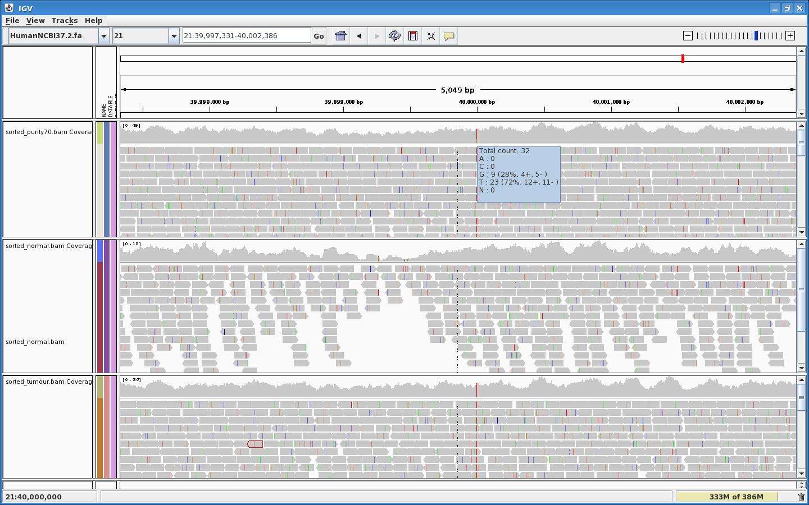

Preamble
In cancer analysis, real tumour samples are often contaminated with healthy cells, leading to a purity coefficient, which is the ratio of DNA from tumour cells relatively to the total amount of sequenced DNA.
Here we show how to use EAGLE to simulate the sequencing of a single Human chromosome (chr21) sample with purity=70%.
Process
We simulate the purity of a sample by generating and merging 2 EAGLE datasets together with the following steps:
- Creating the normal sample
- Generating normal reads in appropriate quantity
- Creating the tumour sample
- Generating tumour reads in appropriate quantity
- Merging normal and tumour samples
- Generating Run Folder from merged reads
If you haven't done it yet, you may refer to the EAGLE - Installation and configuration instructions.
Creating the normal sample
Calculate your desired normal coverage: normal_coverage = (1-purity)*total_desired_coverage
For example, for 70% purity and final 30x coverage, you should use 9x normal coverage here:
source /illumina/development/EAGLE/stable-setup configureEAGLE.pl \ --run-info=$EAGLE_SHARE/RunInfo/RunInfo_PairedReadsBarcode8x32Tiles.xml \ --reference-genome=/illumina/scratch/iGenomes/Homo_sapiens/UCSC/hg19/Sequence/Chromosomes/chr21.fa \ --variant-list=$EAGLE_SHARE/Variants/None.vcf \ --coverage-depth=9 \ --genome-mutator-options="--prefix=normal_" \ EAGLE_normal
Generating normal reads in appropriate quantity
cd EAGLE_normal make fragments cd ..
Creating the tumour sample
Let's mutate our tumour chr21 sample with a SNP at position 40,000,000. Our reference genome contains a 'G' at this position.
We will use the following tumour.vcf file:
chr21 40000000 . G T 0 PASS SVTYPE=SNP
echo -e "chr21\t40000000\t.\tG\tT\t0\tPASS\tSVTYPE=SNP" > tumour.vcf
Calculate your desired tumour coverage: tumour_coverage = purity*total_desired_coverage
For example, for 70% purity and final 30x coverage, you should use 21x tumour coverage here:
configureEAGLE.pl \ --run-info=$EAGLE_SHARE/RunInfo/RunInfo_PairedReadsBarcode8x32Tiles.xml \ --reference-genome=/illumina/scratch/iGenomes/Homo_sapiens/UCSC/hg19/Sequence/Chromosomes/chr21.fa \ --variant-list=tumour.vcf \ --coverage-depth=21 \ --genome-mutator-options="--prefix=tumour_" \ EAGLE_tumour
Generating tumour reads in appropriate quantity
cd EAGLE_tumour make fragments cd ..
Merging normal and tumour samples
We first create the EAGLE structure with configureEAGLE:
configureEAGLE.pl \ --run-info=$EAGLE_SHARE/RunInfo/RunInfo_PairedReadsBarcode8x32Tiles.xml \ --reference-genome=/illumina/scratch/iGenomes/Homo_sapiens/UCSC/hg19/Sequence/Chromosomes/chr21.fa \ --variant-list=$EAGLE_SHARE/Variants/None.vcf \ --coverage-depth=30 \ EAGLE_purity70
Then we use mergeSampleGenomes and mergeFragments to import and merge the data from the normal and tumour directories to this new directory:
cd EAGLE_purity70 $EAGLE_LIBEXEC/mergeSampleGenomes.pl -i ../EAGLE_normal -j ../EAGLE_tumour $EAGLE_LIBEXEC/mergeFragments.pl -i ../EAGLE_normal -j ../EAGLE_tumour
These 2 tools bypass the standard generation of sample genome and fragments, meaning that we can then use the Makefile to complete the Run Folder generation.
Generating Run Folder from merged reads
You can now generate the basecalls (Run Folder) as usual:
make -j 8
(other parallel execution commands described there)
Results
After CASAVA alignment (process described in EAGLE Use Case - Interfacing EAGLE with CASAVA) with the following my_config.mk:
EAGLE_TEST_REF = /illumina/scratch/iGenomes/Homo_sapiens/UCSC/hg19/Sequence/Chromosomes/chr21.fa #unused here: VARIANTS_VCF = $(EAGLE_DATADIR)/Variants/None.vcf #unused here: RUN_INFO_XML = $(EAGLE_DATADIR)/RunInfo/RunInfo_PairedReads1x1Tiles.xml #unused here: DEPTH = 30 CASAVA_ANALYSIS = eland_pair CASAVA_USE_BASES = y*n,y*n
touch eagle.log # bypass the configureEAGLE stage make -f $EAGLE_SHARE/validation/test1/Makefile \ CONFIG_MK=./my_config.mk \ RUN_FOLDER=111206_EAS987_0567_FC1234TST
It takes about 1 hour for CASAVA to do its job.
We can then admire our SNP with 70% purity in IGV:

{kind=link}